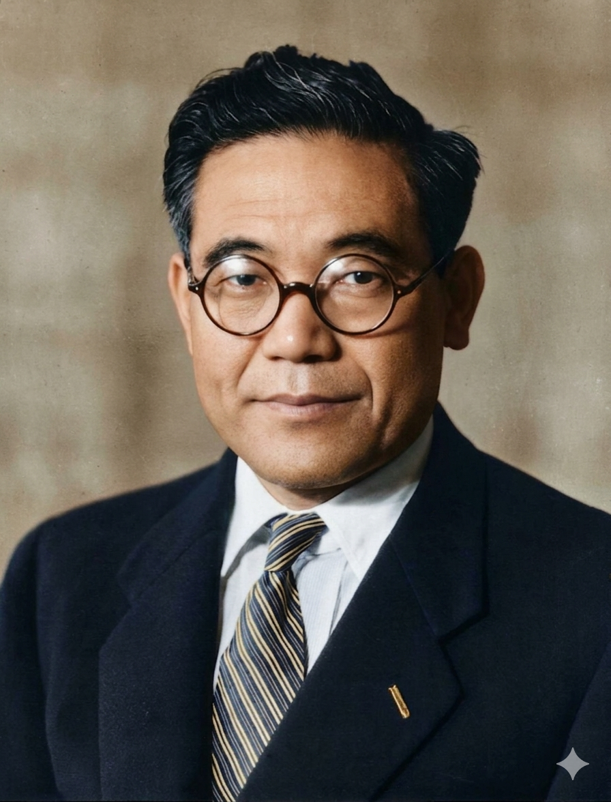
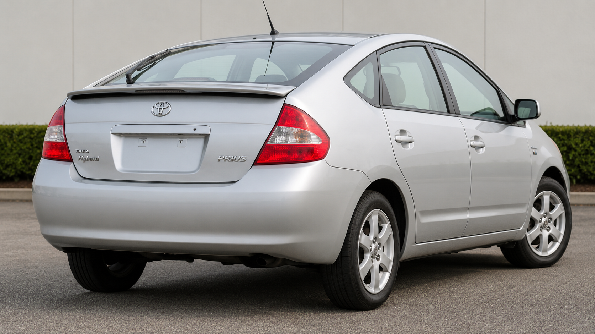

המייסד: קיאיצ'ירו טויודה, 1894–1952

קיאיצ'ירו טויודה היה מהנדס ויזם יפני, בנו של סאקיצ'י טויודה, ממציא ותעשיין שפיתח נולים אוטומטיים. קיאיצ'ירו לא הקים את פעילות הרכב מתוך ואקום, אלא מתוך בית תעשייתי שבו דיוק מכני, משמעת ייצור ופתרון בעיות היו חלק מהתרבות. החלטתו להעביר את משפחת טויודה מתחום הנולים אל עולם המכוניות הייתה סיכון גדול, מפני שביפן של שנות ה־30 תעשיית הרכב המקומית עדיין הייתה צעירה וחסרת ניסיון ביחס לארצות הברית ולאירופה.
חשיבותו של קיאיצ'ירו אינה רק בכך שייסד חברה. הוא הבין שמכונית יפנית לא יכולה להיות העתק פשוט של מכונית אמריקאית. כדי להצליח, יפן הייתה צריכה ללמוד מנועים, מתכות, תיבות הילוכים, פסי ייצור, בקרת איכות, ספקים וחינוך עובדים. לכן דמותו ניצבת בצומת שבין יזמות פרטית לבין פרויקט לאומי של תיעוש יפני.
מקור השם Toyota
השם המקורי של המשפחה הוא Toyoda. המעבר ל־Toyota היה החלטה שיווקית ולשונית: הכתיב החדש היה קצר, קליט ובעל צליל בינלאומי יותר. ביפנית נהוג גם לציין כי כתיבת Toyota בקאטאקאנה נקשרת למספר משיכות עט שנחשב מוצלח. שינוי השם יצר הפרדה בין המשפחה לבין מותג גלובלי חדש.
מה היה לפני המכונית?
לפני טויוטה הייתה Toyoda Automatic Loom Works — חברה שעסקה בנולים אוטומטיים. זהו פרט חשוב מאוד: טויוטה נולדה מתוך עולם של מכונות תעשייתיות שדורשות דיוק, אמינות ובקרה. הנול האוטומטי של סאקיצ'י טויודה כלל רעיון של עצירה כאשר מתגלה תקלה. הרעיון הזה, עצירת התהליך כדי לא להעביר פגם הלאה, הפך בהמשך לעיקרון מרכזי בתרבות הייצור של טויוטה.
הדגם המכונן: Toyota AA
ה־Toyota AA משנות ה־30 סימנה את הניסיון הראשון לבנות מכונית נוסעים יפנית מודרנית תחת שם החברה. היא הושפעה ממכוניות אמריקאיות של התקופה, אך חשיבותה הייתה לימודית ותעשייתית: סביב הדגם נבנו יכולות תכנון, רכש, ייצור והרכבה. טויוטה למדה לא רק כיצד לבנות מכונית, אלא כיצד לבנות מערכת שמסוגלת לשכפל איכות.
Toyota Production System
התרומה העמוקה ביותר של טויוטה היא שיטת הייצור שלה. המושגים Just in Time, Kaizen ו־Jidoka הפכו לשפה עולמית בתעשייה. במקום לייצר בכמויות עצומות ולתקן פגמים מאוחר יותר, טויוטה שאפה לזרימת עבודה מדויקת, מלאי מינימלי, למידה מתמשכת ועצירת בעיות בזמן אמת. השיטה השפיעה על מפעלי רכב, אלקטרוניקה, לוגיסטיקה, רפואה ואף ניהול תוכנה.
דגמי מפתח
Corolla הפכה לאחד הדגמים הנמכרים בהיסטוריה וסימלה אמינות ונגישות. Land Cruiser ביסס את טויוטה בעולם השטח והעבודה הקשה. Camry חיזקה את החברה בשוק המשפחתי האמריקאי. Prius הפכה את ההנעה ההיברידית ממוצר ניסיוני לתופעה מסחרית רחבה. Hilux הפכה לסמל עולמי של קשיחות, במיוחד באזורים מרוחקים.

מורשת וביקורת היסטורית
טויוטה מייצגת זהירות הנדסית: היא לא תמיד הראשונה להציג טכנולוגיה חדשה, אך פעמים רבות היא זו שהופכת אותה לאמינה, רווחית ונפוצה. מצד שני, דווקא הזהירות הזאת גרמה לעיתים לביקורת על האטה במעבר לרכב חשמלי מלא. מבחינה היסטורית, כוח החברה נמצא ביכולתה להפוך תהליך מורכב לשיטה יציבה.